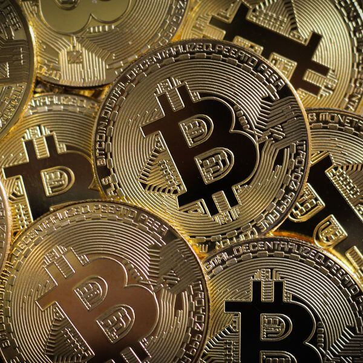

Biticoin é o ativo com maior marketcap do mercado
Bitcoin continua a ser o líder indiscutível no mercado de criptomoedas, mantendo o maior valor de mercado entre todos os ativos digitais. Desde sua criação em 2009, o Bitcoin não apenas revolucionou a forma como pensamos sobre dinheiro, mas também se estabeleceu como uma reserva de valor, semelhante ao ouro.
Leia Mais
Tecnologia Blockchain
A blockchain é uma estrutura de dados descentralizada que armazena informações em blocos interligados. Cada bloco contém um conjunto de transações e, uma vez que um bloco é adicionado à cadeia, ele não pode ser alterado sem que todos os blocos subsequentes também sejam modificados. Isso garante a integridade e a segurança dos dados.
Leia Mais
Provável Rug Pull da modeda PYI Pyrim
Sem aviso algum, os desenvolvedores moveram um grande fundo que possuíam, fecharam todos os canais de contato e sumiram, levando ao colapso do preço da moeda e consequentemente os investimentos de muitos usuários. Essa prática, conhecida como rug pull, é uma forma de golpe no mercado de criptomoedas onde os criadores de um projeto promovem um ativo, atraem investidores e, em seguida, abandonam o projeto, deixando os investidores com ativos sem valor
Leia Mais